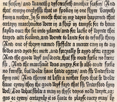

| I | Attachment | Action | Size | Date | Who | Comment |
|---|---|---|---|---|---|---|
| |
|
manage | 53 K | 28 Jul 2022 - 04:26 | AdminUser | Logo |
| |
|
manage | 1 K | 28 Jul 2022 - 04:26 | AdminUser |
PDF, or as a zip or tgz archive file, or by uploading directly to an FTP server.
This is the most complete publishing solution for Foswiki.

PublishPlugin provides support for the generation of stand-alone HTML
from a Foswiki installation. It will generate fully rendered versions of
a set of Foswiki pages together with any attached files, and (optionally)
any external resources referenced.
rest call rest script and pass the current topic:
(added newlines for readability).
<a class='foswikiPopUp'
href='%SCRIPTURLPATH{"rest"}%/PublishPlugin/publish?%REVARG%;
topics=%BASEWEB%.%BASETOPIC%;
format=file;
rel='nofollow'>
Publish this page
</a>
%BOOKLIST{"Bookweb.BookName"}% macro in the topics parameter.
configtopic parameter to the publish script set to the name of the topic to use to control publishing. This should be a full web.topic specification (if you only give a topic name it will pick the topic up from the Main).
cd to the bin directory, and
perl rest /PublishPlugin/publish. Parameters are passed as name=value pairs, for example:
perl rest /PublishPlugin/publish topics='System.*,-*.Web*' format=fileThe available parameter names are shown in the publish form above.
%STARTPUBLISH% and %STOPPUBLISH% control tags: %STARTPUBLISH% is the first control tag seen in the file, everything before it will be ignored.
%STOPPUBLISH% and the next %STARTPUBLISH% (or the end of the topic) will be ignored.
%STARTPUBLISH% and %STOPPUBLISH% will be visible in the viewed topic, so you can easily see what will be published from the topic. Set. Set them to the empty string. That won't stop them being interpreted by the plugin, but will make them invisible in normal view.
| String | What it does | Example | What the example matches |
|---|---|---|---|
| * | Matches any string, including an empty string. | *Cheese* |
Every topic with "Cheese" somewhere in the name (but not "cheese") |
| ? | Matches any single character. | Example1? | Example10 and Example 1X but not example1 |
| [...] | Matches any one of the enclosed characters. A pair of characters separated by a hyphen denotes a range expression; any character that sorts between those two characters, inclusive, using the current locale's collating sequence and character set, is matched. If the first character following the [ is a ^ then any character not enclosed is matched. A - may be matched by including it as the first or last character in the set. A ] may be matched by including it as the first character in the set.Within [ and ], character classes can be specified using the syntax [:class:], where class is one of the following classes defined in the POSIX.2 standard: alnum, alpha, ascii, blank, cntrl, digit, graph, lower, print, punct, space, upper, word, xdigit. A character class matches any character belonging to that class. The word character class matches letters, digits, and the character _. |
B[aeiou]g |
Bag, Bog, Big, Beg, Bug |
{Plugins}{PublishPlugin}{Dir} configuration setting. Administrators can
manage the contents of this directory from the browser using the
%PUBLISHERS_CONTROL_CENTRE% macro (see PublishPluginControlCentre).
If relativedir is set, then it will be added after {Plugins}{PublishPlugin}{Dir}. See How to attach the output to a Topic for an example of how to use this.
If outfile is not set in the parameters it defaults to the name of the format being published.
Most formats generate a single file with a unique extension that identifies the format e.g. .pdf. When publishing a format that generates multiple files (e.g. file) then outfile will normally be a directory.
history parameter to the name of a topic. In order to publish a web, you have to be able to write to this topic.
If the selected publishing skin defines a skin template called publish_history, then that template will be used as the basis of the history topic. This (for example) allows you to use a template with a skin to define access controls for the history topic. The template can refer to a Foswiki macro %PUBLISHING_HISTORY% to get the expanded history. The basic_publish skin provides templates/publish_history.basic_publish.tmpl for this purpose.
The history topic contains a list of all the parameters used, and the versions of the topics that were published, so it is very useful for tracking exactly what you publish. However it can grow very large, if (for example) you are updating a static site from the wiki content regularly.
configure
{Plugins}{PublishPlugin}{Dir} to the same as {PubDir}
relativedir setting that corresponds to the attachment directory for the web/topic that you want to attach to
{AutoAttachPubFiles} is enabled, it will automatically be attached to the topic.
cd /path/to/foswiki perl tools/extension_installer <NameOfExtension> installIf you have any problems, or if the extension isn't available in
configure, then you can still install manually from the command-line. See https://foswiki.org/Support/ManuallyInstallingExtensions for more help.
IMPORTANT Run configure and complete the installation in the PublishPlugin section.
If you want to generate PDF files, you will need to install a PDF generator, for example htmldoc or prince. Find them using google.
Note that htmldoc can also be used to generate PostScript. See the htmldoc man pages for details.
If you want zip output you will have to install Archive::Zip.
If you want tgz output, install Archive::Tar.
If you want to use the ftp upload, you will need to install Net::FTP.
WARNING! Anything published is no longer under the
control of Foswiki access controls, and if you make the publish output
directory visible on the web then you may need to
take precautions to prevent accidental leakage of confidential information
by restricting web access to this directory, for example in the Apache
configuration.
One way to do this is to use the viewfile access rights management to control
access to the published content: configure to publish to pub/Publish/PublishedContent
Publish web and !Publish.PublishedContent will then
apply.
| Name | Version | Description |
|---|---|---|
| File::Spec | >0 | Required. Used to analyse URL paths. |
| File::Copy | >0 | Required. Used to move files around. |
| File::Path | >0 | Required to manipulate directories. |
| File::Temp | >0 | Required for temporary files. |
| URI | >0 | Required for URL manipulation |
| Scalar::Util | >0 | Required, supporting URI |
| LWP | >0 | Optional. Used to include images referenced by absolute URLs |
| Archive::Zip | >=0 | Optional. Required to generate .zip output |
| Archive::Tar | >=0 | Optional. Required to generate .tgz output |
| Net::FTP | >0 | Optional. Required for ftp publishing. |
| htmldoc | Optional. Required to generate .pdf output | |
| Digest::MD5 | >0 | Optional. Required for fast upload to ftp servers. |
compress parameter has been removed.
templates parameter has been removed. We couldn't find anyone who was using it. The template parameter provides a subset of it's functionality.
keep parameter.
web, topiclist, exclusions and inclusions parameters are still supported, but are undocumented and will be removed in a later version. They are ignored if topics is given.
| 3.6 (28 Jul 2022) | .css. |
| 3.5 (07 Dec 2021) | cover on publishskin. |
| 3.4 (30 Jan 2018) | |
| 3.3 (26 Jan 2018) | |
| 3.2 (23 Jan 2018) | |
| 3.1 (23 Apr 2017) | |
| 3.0 (22 Apr 2017) | Crawford Currie extensively rewrote to separate concerns and get rid of some of the poor code that had crept in over the years. Removed ability to publish several templates in one go, due to performance and complexity concerns. Removed flatpdf format, as it's pretty useless with modern htmldoc. Deprecated web, topiclist, inclusions, exclusions and simplified to one parameter, topics, renamed topicsearch to rexclude and skin to publishskin. WARNING: untested on Foswiki <2 |
| 2.5 (25 Jan 2017) | Update to work with Foswiki 2.x. |
| 2.4 (30 Jul 2012) | |
| 2.3.2 (10 Aug 2011) | |
| 2.3.1 (14 Jun 2011) | |
| 2.2.1 (25 May 2011) | |
| 2.2.0 (28 Mar 2011) | |
| 2.1.7 (01 Nov 2010) | |
| 2.1.6 (29 Oct 2010) | ?t=2365421) |
| 2.1.5 (05 Feb 2010) | Documentation update. |
| 2.1.4 (12 Jan 2010) | |
| 2.1.3 (11 Jan 2010) | |
| 2.1.2 (30 May 2009) | |
| 2.1.1 (22 May 2009) | |
| 2.1.0 (16 May 2009) | |
| 2.0.2 (18 Mar 2009) | |
| 2.0.1 (14 Feb 2009) | |
| 2.0.0 (27 Nov 2008) | |
| 1.1.0 (7 Jan 2003) | Initial version |
pdf and tgz output formats were made possible by Sabio Labs
This program is distributed in the hope that it will be useful,
but WITHOUT ANY WARRANTY; without even the implied warranty of
MERCHANTABILITY or FITNESS FOR A PARTICULAR PURPOSE. See the
GNU General Public License for more details, published at
http://www.gnu.org/copyleft/gpl.html
| I | Attachment | Action | Size | Date | Who | Comment |
|---|---|---|---|---|---|---|
| |
|
manage | 53 K | 28 Jul 2022 - 04:26 | AdminUser | Logo |
| |
|
manage | 1 K | 28 Jul 2022 - 04:26 | AdminUser |
{kind=link}
{kind=link}